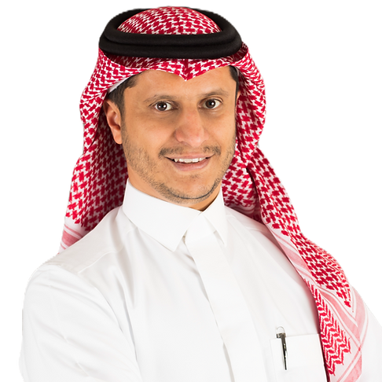

Associate Professor
Information and Computer Science Department
King Fahd University of Petroleum & Minerals (KFUPM)
Office: Building 22, Room 323
P.O. Box 634, Dhahran 31261, Saudi Arabia
Email: hjamaan at kfupm.edu.sa
Phone: +966 (13) 860 1150
Hamoud Aljamaan is an Associate Professor in the Information and Computer Science Department at King Fahd University of Petroleum and Minerals (KFUPM), Saudi Arabia. He received his Ph.D. in Computer Science from the University of Ottawa, Canada, in December 2015. His research interests include ensemble learning, AI for software engineering, software quality, and time series analysis. He served as department chairman from January 2019 to August 2023, leading major program revisions, new graduate programs in artificial intelligence and cybersecurity, and the annual 4IR Data Science Summer School for Saudi Aramco employees.